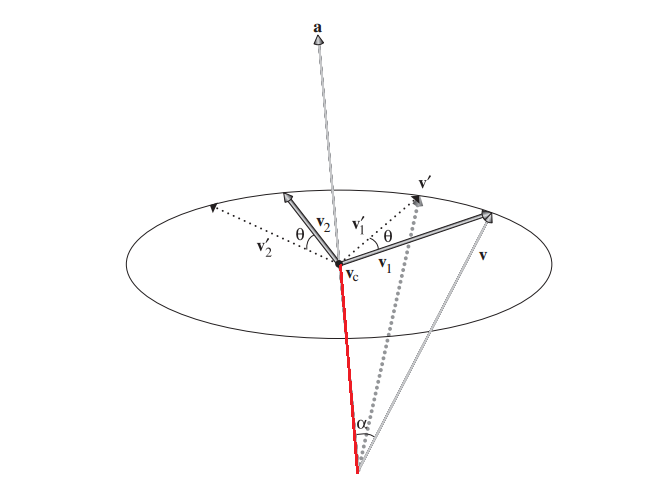

PBRT《章2》阅读笔记
Tags: c++, pbrt
最近在看线代的公开课，顺便也把PBRT这个坑开了，合在一起学。
本文的cpp代码均来自https://github.com/mmp/pbrt-v2，木有修改。只为方便读者阅读。
正文
一个基本的渲染器，需要实现2点：输入场景数据、输出渲染图像。
输入场景数据这一步，就需要对3D世界各种东西进行抽象、并设计各种数据结构，比如比较fundamental的：3D空间向量、3D坐标系系统、光线，或者visible的：各种2D/3D几何体、纹理系统等。大概就是，这个渲染器要渲染的东西，程序上都会有一些对应的代码。渲染器不可能对未知的东西进行渲染。比如毛发、布这种高端的东西，一个基本的渲染器是无法渲染的，除非你写了一些代码来完成这个事情。
《PBRT》第二章就讲了这些基础的东西。
在前面的线代的文章中，提到了矩阵的基(basis)的概念。矩阵的基是一组线性无关的列向量，这个矩阵的列空间的任意一点，可以通过对矩阵的基的线性组合得到。
那么n维的情况下，定义一个向量的公式是：
\[ v = s_{1}v_{1} + \cdots + s_{n}v_{n} \]
定义一个点的位置的公式是：
\[ p = p_{0} + s_{1}v_{1} + \cdots + s_{n}v_{n} \]
对于渲染器的3维空间，要简化成：
\[ p_{0} = (0,0,0) \] \[ basis = (1,0,0) (0,1,0) (0,0,1) \]
这3个标准基向量对应的空间被称为世界空间(world space)。
向量(vector)、点(point)的区别
向量和点，区别在于点没有长度的概念，也就是说点是零维的，点代表空间里的一个位置（pbrt的Point和Vector的差异是没有LengthSquared、Length函数)，而向量没有起点的概念，向量只是指明了一个方向并且有长度。
3维空间下，如何从一个向量出发，构造出一组标准正交基
注意，这个问题是有重要意义的，因为一组标准正交基相当于一个坐标系。
设\( v_{1}=(x_{1},y_{1},z_{1}) \)，并且v1已经单位化
随便选择v1的某一个分量，并将它变成0，再交换剩余的2个分量的位置，并对其中一个分量取反，就能得到和v1正交的v2。这是因为这样构造出来的v2，必然使得\( v_{1}\cdot v_{2}=0 \)。比如当\( v_{2}=(-z_{1},0,x_{1}) \)时，有\( v_{1}\cdot v_{2}=(x_{1},y_{1},z_{1})\cdot (-z_{1},0,x_{1}) = 0\)
上面的v2还有不足，因它不是单位化的。单位化的v2应该是\[v_{2}=\dfrac { (-z_{1},0,x_{1}) }{ \sqrt {z_{1}^{1}+x_{1}^{1}}} \]
有了v1、v2后，v3就等于v1和v2的叉积(cross product): \( v_{3} =v_{1} \times v_{2} \)
法向量Normal
(突然意识到，pbrt把向量、点、法向量写成3个没有继承关系的类，意义在于，防止程序员乱用并搞砸代码=。=)
** A surface normal is a vector that is perpendicular to a surface at a particular position.It can be defined as the cross product of any two nonparallel vectors that are tangent to the surface at a point. **
法向量是与某个平面垂直，并经过平面上某个特殊位置的向量。可以用平面上2个互不平行、与平面正切的向量的叉积来表示。
法向量应该说是一种特殊的向量。pbrt也实现了一个以Vector为参数的Normal构造函数（但有explicit标志），允许通过向量构造出法向量。
光线Ray
光线是一条半无限长的线，用一个原点和一个方向向量来表示。
参数形式的光线表示：
\[ r(t) = o + td \ \ \ 0\leq t\geq \infty \]
光线还有其他成员变量：
- mint maxt，用来限定t的范围
- time 用于构建动画，当构建静态场景时不需要
- depth 光线弹射深度。限制光线只能bounce多少次
微分光线Differential Ray
先跳过
包围盒
包围盒的主要作用，是用来优化程序性能的，更具体的说，就是让复杂场景物件简化成简单的球形、方盒，使得光线快速剔除不相交的对象，计算得更快。
BBox
这玩意神奇的地方，我觉得是它的构造函数。输入是2个Point，就能构造一个盒子，并且也仅仅是花了2个Point来存储。这2个新的Point和输入的Point不同，被称为pMin和pMax:
\[ pMin = (min(p_{1}.x,p_{2}.x), min(p_{1}.y,p_{2}.y), min(p_{1}.z,p_{2}.z)) \]
\[ pMax = (max(p_{1}.x,p_{2}.x), max(p_{1}.y,p_{2}.y), max(p_{1}.z,p_{2}.z)) \]
需要注意的是，根据这个转换公式，要使得pMin和pMax足够定义一个BBox，那么他们必然是BBox的2个对角顶点。且因为BBox平行于x、y、z轴，那么pMin和pMax的任意一个分量都不能相等。（否则，pMin、pMax就只能是BBox的一对邻接顶点）
p1、p2和pMin、pMax是什么关系呢？其实，p1、p2也是这个BBox的某一组对角顶点。计算出来的pMin、pMax也只是这4组对角顶点的特定的一组，只不过pMin必然是BBox8个顶点中最靠近坐标系原点的顶点、pMax必然是最远离坐标系原点的顶点。
转换Transformation
** In general, a transformation T is a mapping from points to points and from vectors to vectors:**
\[ p^{\prime } = T(p) \] \[ v^{\prime } = T(v) \]
回想下线代的知识，就可以知道，这个T必然是一个方阵，阶数等于p(或v)的维数，T对p(或v)的转换，其实只是一次矩阵乘法。
T有很多种，大部分是无特殊转换意义的，但有小部分是有特定意义且能用在图形学里的。譬如：
- Translation，我称之为位置转换
- Scaling，缩放转换
- Rotation，旋转转换
Translation的一般形式：
\[ T(\vartriangle x,\vartriangle y,\vartriangle z) = \left[ \begin{matrix} 1&0&0&\vartriangle x\\ 0&1&0&\vartriangle y\\ 0&0&1&\vartriangle z\\ 0&0&0&1\\ \end{matrix} \right] \]
Scaling的一般形式：
\[ T(\vartriangle x,\vartriangle y,\vartriangle z) = \left[ \begin{matrix} x&0&0&0\\ 0&y&0&0\\ 0&0&z&0\\ 0&0&0&1\\ \end{matrix} \right] \]
Rotation的一般形式，比较复杂，先分成3种情况考虑。所谓的旋转，都要有一个轴线，对任意一个3维坐标系来说，有3条轴，所以就有以3条轴为轴线的3个Rotation：
\[ R_{x}(\theta ) = \left[ \begin{matrix} 1&0&0&0\\ 0&cos\theta &-sin\theta &0\\ 0&sin\theta &cos\theta &0\\ 0&0&0&1\\ \end{matrix} \right] \]
\[ R_{y}(\theta ) = \left[ \begin{matrix} cos\theta &0&sin\theta &0\\ 0&1&0&0\\ -sin\theta &0&cos\theta &0\\ 0&0&0&1\\ \end{matrix} \right] \]
\[ R_{z}(\theta ) = \left[ \begin{matrix} cos\theta &-sin\theta &0&0\\ sin\theta &cos\theta &0&0\\ 0&0&1&0\\ 0&0&0&1\\ \end{matrix} \right] \]
以x轴的旋转分析一下：
因为：
\[ R_{x}(\theta )[x,y,z,w]^{T} = [x,cos\theta \cdot y - sin\theta \cdot z,sin\theta \cdot y + cos\theta \cdot z, w]^{T} \]
所以有：
\[ R_{x}(\theta )[1,0,0,0]^{T} = [1,0,0,0]^{T} \]
\[ R_{x}(\theta )[0,1,0,0]^{T} = [0,cos\theta ,sin\theta ,0]^{T} \]
\[ R_{x}(\theta )[0,0,1,0]^{T} = [0,-sin\theta ,cos\theta ,0]^{T} \]
可以看出，用Rx旋转x轴,x轴不变,旋转y、z轴，y、z轴会被顺时针旋转\(\theta \)度（左手坐标系时）。
Rotation有一些特性：
- \( R_{\alpha }(0) = I \) 这个0是指\(\theta=0\)，不是向量0
- \( R_{\alpha }(\theta _{1})R_{\alpha }(\theta _{2}) = R_{\alpha }(\theta _{1} + \theta _{2}) \)
- \( R_{\alpha }(\theta _{1})R_{\alpha }(\theta _{2}) = R_{\alpha }(\theta _{2})R_{\alpha }(\theta _{1}) \)
- \( R_{\alpha }^{-1}(\theta ) = R_{\alpha }(-\theta ) = R_{\alpha }^{T}(\theta ) \)
回想下正交矩阵的定义：如果实数域上的方阵A满足 \( A^{T}A = I \)，则称A为正交矩阵，根据上面的第四条性质，R显然也是一个正交矩阵。正交矩阵的好处是，它的逆矩阵很简单，等于它的转置矩阵。
当需要围绕任意一个向量做旋转时，可以这样想：
- 设轴向量为a，要被旋转的向量为v
- 把a向量当做一个x轴（y or z轴也行）；把v到a的error向量（如果不知道什么是error向量，请看我之前的文章）当做y轴
- 以x、y轴向量去计算正交的z轴向量（用叉积即可）
- 就得到了一个以a向量为x轴的xyz坐标系了
- 所以原问题就变成了，绕这个虚拟坐标系的x轴旋转
计算过程：
- \( v_{c} = a\parallel v\parallel cos\alpha = a(v\cdot a) \)
- \( v_{1} = v - v_{c} \)
- \( v_{2} = v_{1}\times a \)
- \( v_{1}^{\prime } = v_{1}cos\theta + v_{2}sin\theta \)
- \( v^{\prime } = v_{c} + v_{1}^{\prime } \)

(书里没有标出来\( v_{c} \) ,红色的那段就是)
书里也没有解释上面第三个式子是怎么得到的。我的理解是，因为\( v_{1}^{\prime } \)和\( v_{1} \)等长，所以\( v_{1}^{\prime } \)在\( v_{1} \)上的投影(向量)等于\(v_{1}cos\theta \)，又因为\( v_{1} \)是一个坐标系的轴，所以这个投影就是\( v_{1}^{\prime } \)对应这个轴的分量；同理，\(v_{2}sin\theta \)，是\( v_{1}^{\prime } \)在\( v_{2} \)上的投影。这两个投影向量的和，就是\( v_{1}^{\prime } \)。
不过这个任意轴旋转的矩阵就不那么简单了，先设：
- \( c = cos\theta \)
- \( s = sin\theta \)
- \( x,y,z = normalize(x,y,z) \)
\[ R_{(x,y,z)}(\theta ) = \left[ \begin{matrix} x^{2}+(1-x^{2})c&xy(1-c) -zs&xz(1-c)+ys&0\\ xy(1-c)+zs&y^{2}+(1-y^{2})c&yz(1-c)-xs&0\\ xz(1-c)-ys&yz(1-c)+xs&z^{2}+(1-z^{2})c&0\\ 0&0&0&1\\ \end{matrix} \right] \]